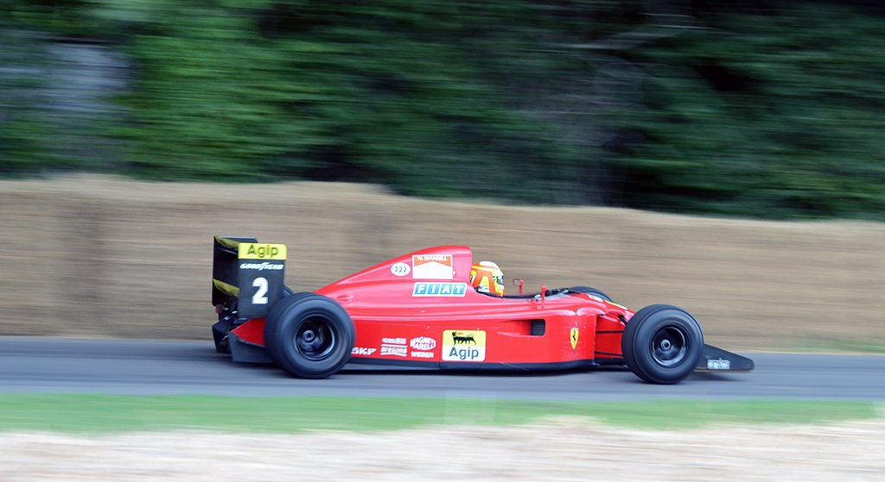
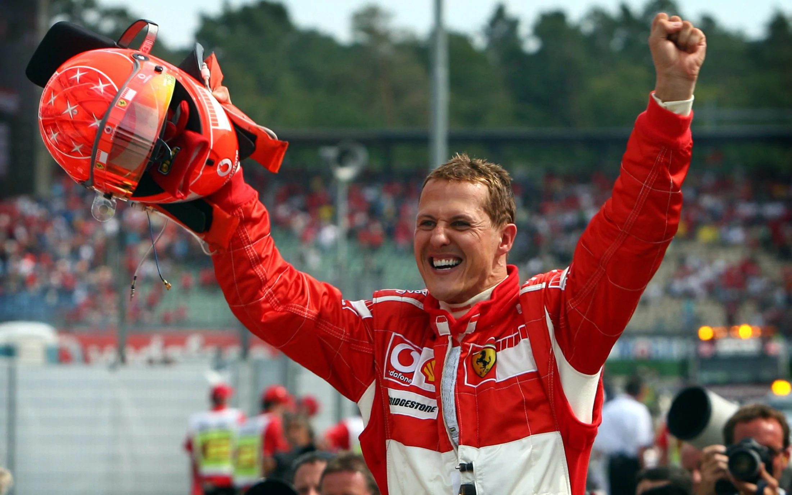

1980 - 2000
Ferrari 641

The car scored 6 wins in the 1990 season (Prost 5 wins, Mansell 1 win). Incorporating the semi-automatic gearbox developed during the previous season, the car was seen to be technically advanced. The aerodynamics were reworked and the chassis gave a slightly longer wheelbase than its predecessor. Ferrari's major coup was signing reigning World Champion Alain Prost from McLaren to partner Nigel Mansell. As such, Nichols designed the car with Prost's smooth driving style in mind. A variable inlet trumpet system on the engine was tested throughout the season but did not become standard equipment.
Prost worked hard on improving the reliability of the gearbox and also worked behind the scenes to bring the whole Ferrari team closer together. Prost's development work helped the 641 chassis to be extremely fast and competitive, and he scored five wins, including a remarkable victory from 13th place on the grid in Mexico, and challenged his nemesis Ayrton Senna for the championship. In the same race, Mansell outfoxed Gerhard Berger with a daring passing move at the fearsome Peraltada corner. Although the car occasionally struggled in qualifying, it appeared to have the edge on the McLarens in race trim, particularly at high-speed circuits. At the British Grand Prix, Mansell dominated qualifying while Prost struggled. Feeling that Mansell's car was superior to his own, he convinced the team to switch the chassis before the race, which he won while Mansell retired and promptly announced his quitting the sport. However, the famous collision between Prost and Senna at the Japanese Grand Prix sealed the Drivers' Championship for Senna and the Constructors' Championship for McLaren. Prost finished runner-up in the championship and Mansell finished 5th and scored 1 win, including excellent performance in his last race for Ferrari at Adelaide, where he finished 2nd and almost won that race from Nelson Piquet and his Benetton-Ford. It would be another seven years before Ferrari would challenge for either championship again.
Michael Schumacher

After success in karting as a child, Schumacher won titles in Formula König and Formula Three before joining Mercedes in the World Sportscar Championship. In 1991, his Mercedes-funded race debut for the Jordan Formula One team resulted in Schumacher being signed by Benetton for the rest of that season. He finished third in 1992 and fourth in 1993, before becoming the first German World Drivers' Champion in 1994 by one point over Damon Hill, albeit in controversial circumstances. In 1995 he repeated the success, this time with a greater margin. In 1996 Schumacher moved to Ferrari, who had last won the Drivers' Championship in 1979, and helped them transform into the most successful team in Formula One history, as he came close to winning the 1997 and 1998 titles, before breaking his leg at the 1999 British Grand Prix, ending another title run.
Schumacher won five consecutive drivers' titles from 2000 to 2004, including an unprecedented sixth and seventh title. In 2002, Schumacher won the title with a record six races remaining and finished on the podium in every race. In 2004, Schumacher won 12 out of the first 13 races, and went on to win a record 13 times as he won his final title. Schumacher retired from Formula One in 2006, after finishing runner-up to Renault's Fernando Alonso. Schumacher returned to Formula One in 2010 with Mercedes. He produced the fastest qualifying time at the 2012 Monaco Grand Prix, and achieved his only podium on his return at the 2012 European Grand Prix, where he finished third. In October 2012 Schumacher announced he would retire for a second time at the end of the season.
His career was at times controversial, as he was twice involved in collisions in the final race of a season that determined the outcome of the World Championship, with Damon Hill in 1994 in Adelaide, and with Jacques Villeneuve in 1997 in Jerez. Schumacher is an ambassador for UNESCO and has been involved in numerous humanitarian efforts throughout his life, donating tens of millions of dollars to charity. Schumacher and his younger brother, Ralf, are the only siblings to win races in Formula One, and they were the first brothers to finish first and second in the same race, a feat they repeated in four subsequent races.
In December 2013, Schumacher suffered a severe brain injury in a skiing accident. He was placed in a medically induced coma until June 2014. He left hospital in Grenoble for further rehabilitation at the University Hospital of Lausanne, before being relocated to his home to receive medical treatment and rehabilitation privately in September 2014.